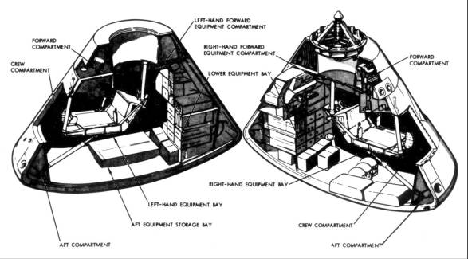

Administrator James Webb knew that the futures of NASA and Apollo were interlocked and that the agency's peak in appropriations and manpower would probably be reached in 1965 and 1966. But neither he nor the other NASA officials who spent six months each year justifying financial needs before the Bureau of the Budget and Congress could predict just when funding requirements would taper off. On one hand, only $5.1 billion of the $5.25 billion authorized for fiscal 1965 had been spent; on the other, there were indications that the $5.2 billion in the fiscal year 1966 authorization might not be enough. Apollo funding was more than $2.5 billion in 1965 and would exceed $3 billion in each of the next few years. The spacecraft alone accounted for a third of this, $1 billion a year.1
Almost as soon as he joined NASA, Associate Administrator for Manned Space Flight George Mueller had argued before Congress, the budget bureau, and his superiors that cost and schedule factors were intertwined: slowing the pace - and many asked, why the hurry? - meant stretching both time and payrolls. To hold costs down, Mueller believed in pushing, although not sacrificing, performance, reliability, and quality, continually admonishing his field centers to "get today's work done today - and some of tomorrow's work also." But the drive for order needed more than Mueller's prompting. On 15 January 1965, Apollo Program Director Samuel Phillips issued an "Apollo Program Development Plan." Besides serving as a general reference, this document, in its 17 subdivisions, specified how the Apollo objectives would be reached, how performance and proposed changes would be evaluated, and how these changes, after approval, would be implemented. Its first section, Program Management, laid out the responsibilities for all participants in a pie-shaped chart, sliced to show each major piece of the program and the organization - industry or NASA (MSC, Marshall, Goddard, Kennedy, or Headquarters) - assigned to implement these duties. Other sections dealt with such items as scheduling, procurement, data management, configuration management, logistics, facilities, funds and manpower, and systems engineering. This directive pulled together, in one place, all the parts of Apollo and explained how the decisions to integrate them would be made.2
Mueller had revived the dormant Panel Review Board in late 1964,* hoping to get a tighter rein on configuration control management of the spacecraft and launch vehicles and to speed up the manufacture and qualification of flight vehicles. Houston had established a Configuration Control Panel in 1963, but spacecraft development was in such a fluid state that panel authority was limited. By late 1964, however, ASPO Manager Joseph Shea was able to set up a stronger, more effective, Configuration Control Board to review and manage changes in the spacecraft.3
After much correspondence between Washington and Houston, Shea issued a Configuration Management Plan, outlining his board's responsibilities and limitations and the functions of each of the program offices under his jurisdiction in carrying out the dictates of the board. But having a plan did not immediately turn the tide. Even after the document was published, Shea and his lieutenants tried in vain to stem mounting weights and slipping schedules. During a briefing at North American in April, Shea felt, as he had earlier, that engineering was getting out of hand and slowing progress on both Block I (earth-orbital) and Block II (lunar-orbital) command modules. Block I spacecraft 004 and 007 would be three and six weeks late leaving the factory, and North American had completed only 526 of nearly 4,000 engineering drawings for Block II. Dale D. Myers, NAA Apollo Program Director in Downey, assured Shea that the company was beginning to catch up on its workload. Nevertheless, Myers reorganized his engineering department into six divisions reporting to his chief engineer, H. Gary Osbon: systems engineering (under Norman J. Ryker, Jr.), project engineering (Ray W. Pyle), vehicle systems (J. J. Williams), control systems (S. M. Treman), ground support equipment (D. K. Bailey), and planning and operations (C. V. Mills).4
Configuration control was a major factor in bringing order to Apollo, but there had to be some way to gauge how well it worked. In mid-August, Mueller and Phillips identified a series of reviews, inspections, and certifications that would be key checkpoints for Apollo:
While Headquarters was working on configuration control and the review plans, command module weight kept getting out of hand. Caldwell Johnson reminded Max Faget in August that, more than a year and a half earlier, he had pointed to weight control as the single most difficult technical problem. To "keep [the] spacecraft on its diet," Johnson proposed putting pressure on the subsystem managers to begin a rigorous system of checks and cross-checks down through the subsystem level. Faget passed Johnson's suggestions along to Shea, who, already aware that he had a fat spacecraft, was also being bombarded with warnings about the lack of reliability in Block I. Owen G. Morris, Shea's Chief of Reliability and Quality Assurance, listed 71 possible failure points that North American had evidently done nothing to eliminate. Morris was not the only one to raise the reliability issue. Shea's old adversary in the mode selection, Nicholas Golovin of the President's Science Advisory Committee, wrote that he had heard of 50 items that accounted for "perhaps 95 percent of the unreliability of the Apollo system."6

Cutaway views show the interior of the command module (for clarity, the center couch is not shown).
Not all the story was bleak, however. In November attention centered on a three-week Critical Design Review for the Block II command module. This event followed reviews of the lower equipment bay and upper deck in February; the guidance and control systems, crew compartment, and docking system in March; the extravehicular mobility unit in April; internal lighting displays and side access hatch in June; and the spacecraft-lunar module adapter in June and August. The major result of all these reviews was an entirely new inspection article called, in engineering shorthand, "EM3" (for engineering manufacturing module mockup), which demonstrated that North American was making progress toward a finished Block II design.
Alan Kehlet, North American's Block II project manager, and assistants Gerald R. Fagan and Louis W. Walkover made the contractor's presentation. Kehlet explained that the Critical Design Review was a formal, technical review of the Block II spacecraft as reflected in the program specification. The general format of the briefing was: "This is what the spec says it's supposed to look like or supposed to do from a functional standpoint, and this is what the design is."
Before Fagan and Walkover launched into discussions of each individual system, Kehlet told his listeners that NASA must shoulder some of the blame for schedule slips at North American:
This is the status of our vehicles in manufacturing. . . . You can see we are about four weeks behind in 2TV-1 [the Block II thermal-vacuum test article] and primarily [because of a] lack of secondary bond details. . . . The reason we're having trouble with secondary bond details is [that] we are having trouble defining the wire routing in certain areas. The reason we're having trouble with defining the wire routing is because the schematics came out late. And the reason schematics came out late was somebody didn't define their system. And NASA and the [North American] project office get blamed for that. So it's a chain event. . . .7
For several months, Shea had been critical of Block II progress. He had complained in June that engineers, besides trying to develop the spacecraft, had adopted a stance of "as long as we are making the necessary changes, we might as well introduce these [others]." Therefore he asked the subsystem managers in Houston and Downey, who were causing some of the problems, to review both Blocks I and II and eliminate any unnecessary changes. There were plenty of subsystem or component problems to wrestle with, Shea knew, without constantly redesigning the lower equipment bay to fit changing components. In all fairness, however - and Shea knew this - the subsystem managers at North American and the Manned Spacecraft Center were caught in the trap of changing concepts. For example, the cancellation of onboard maintenance in favor of redundant or backup systems in the event of a malfunction resulted in modified parts and subsystems that would no longer fit in the equipment section.8
But sometimes a change was dictated by troubles that cropped up in supposedly uncomplicated areas. One such nagging problem that arose in 1965 was how to keep the command module windows clean. A fiber glass cap with a cork ablator, called a boost protective cover, was attached to the escape tower and fitted atop the spacecraft to protect the windows during tower jettisoning. When tests showed that the cover would crack and the plumes from the escape tower would deposit soot on the windows and possibly cause other damage, North American bonded Nomex (a nylon material strengthened with Teflon) between the fiber glass and cork layers of the cover to reinforce it.9
And in areas where problems were expected to arise, they did. Two of the tanks - one holding oxidizer and propellant for the command and service module's reaction control thrusters (with which the spacecraft was steered) and the other housing reactants for the fuel cells that provided electrical power - were in trouble. The Bell Aerospace Systems Company furnished North American with "positive expulsion RCS tanks," a system that forced propellant and oxidizer into the firing chambers where the fluids would ignite on contact. The oxidizer tanks kept failing, and Bell kept trying to fix them in an apparently disorganized manner. Eventually, the trouble was traced to the oxidizer, which had too little nitrous oxide in the nitrogen tetroxide, causing stress corrosion (or cracking) in the tanks. When the nitrous oxide was more carefully specified and controlled, the tanks stopped failing. The hydrogen and oxygen fuel-cell-reactant storage tanks, tucked in a service module bay, were also developing cracks. By August, Shea was worrying whether Beech Aircraft, who supplied them, would be able to diagnose and solve the problem in time for the early flights. With the aid of Langley Research Center, the trouble was traced to a reaction of the nitrogen tetroxide to the titanium used for the oxidizer tanks and tubing. Beech simply installed stainless steel components, and the problem ended.10
Shea found that the penchant for unnecessary changes in Block II was shared by some of the guidance and navigation system developers. On a visit to Honeywell in May 1965, he learned that 50 percent of the stabilization and control circuitry was new, 30 percent was slightly modified, and only 20 percent was identical with Block I wiring. Although he conceded that many of the changes were warranted, Block II had been used to justify nonessential circuits, as well. Shea believed that the Apollo office was inviting trouble; the changes had reached a point where more time would be lost in trying to eliminate them. Pressure was applied to make sure that North American kept its associate contractors on both the spacecraft and guidance and navigation systems up to date on changes; interface control documents would be used to prevent this kind of problem in the future.11
* See Chapter 5. Members of the review board were Mueller and Phillips (NASA Headquarters), George Low (Houston), Eberhard Rees (Marshall), and Rocco Petrone (Kennedy).
** The first DCR had been conducted on Gemini III on a one-time basis; Mueller was so impressed with the results that he continued the practice for all future missions.
1. NASA Program and Special Reports Div., "Pocket Statistics: History," January 1971 (issued semiannually), pp. E-2 through E-4; Congress, An Act to authorize appropriations to [NASA]: Public Law 89-53, 89th Cong., 1st sess., 28 June 1965; Congress, An Act making appropriations . . . for the fiscal year ending June 30, 1965 . . . : Public Law 89-128, 89th Cong., 2nd sess., 16 Aug. 1965.
2. OMSF Apollo Program Office, "Apollo Program Development Plan," NPC C500, MA 0001000-1, 15 Jan. 1965.
3. Kennedy Space Center, minutes of Panel Review Board Meeting 64-1, 28 Jan. 1964; Joseph F. Shea memo, "Configuration Control Board," 1 Dec. 1964; Aubrey L. Brady, secretary, minutes of Configuration Control Board Meeting no. 1, [13 Jan. 1965], with enc.; J. Thomas Markley to Gordon J. Stoops, "Critique of First CCB Meeting," 15 Jan. 1965. For a discussion of what configuration management really is, see Andrew Hobokan to Mgr., LEM, "Configuration Management," 15 July 1965.
4. MSC, "Apollo Spacecraft Program Office Configuration Management Plan," 1 March 1965, Revision B, 15 March 1965; North American, "Shea Briefing - April 15, 1965"; North American organization announcement, H. Gary Osbon and Dale D. Myers to Apollo Engineering Supervision, "Apollo Engineering Reorganization," 30 April 1965, with attached organization charts.
5. OMSF, "Sequence and Flow of Hardware Development and Key Inspection, Review, and Certification Checkpoints," Apollo Program Directive No. 6, 12 Aug. 1965.
6. Maxime A. Faget to Mgr., ASPO, "Apollo spacecraft weight control," 30 Aug. 1965, with encs., Caldwell C. Johnson to Dir., MSC, 29 Jan. 1965, and to Asst. Dir., Engineering and Development (E&D), 9 Aug. 1965, subj. as above; Clinton L. Taylor to North American, Attn.: James C. Cozad, "Control-display criteria for crew safety and mission success," 8 Jan. 1965; Owen E. Maynard to Mgr., ASPO, "Single Point Failures," 17 Feb. 1965; Osbon to MSC, Attn.: Taylor, "Single-Point Failures in Controls and Displays," 5 Aug. 1965; Shea memo, "Apollo Spacecraft Failure Reporting and Corrective Action Follow-up and Display," 27 Oct. 1965; Owen G. Morris memo, "NAA Single Point Failures," 1 Oct. 1965; R. Wayne Young to Grumman, Attn.: Robert S. Mullaney, "Single Point Failures," 22 Nov. 1965; Maj. Gen. Samuel C. Phillips to Wernher von Braun et al., 31 Aug. 1965, with enc., Nicholas E. Golovin to members and consultants, Space Technology Panel, "Letter to General Phillips and Questions to NASA for the Houston Meeting (October 14-16, 1965)," 27 Aug. 1965, with encs.; Phillips to von Braun et al., 15 Sept. 1965, with enc.
7. Maynard memos, "Critical Design Review of Block II CSM," 29 Sept., 1 Nov., and 10 Nov. 1965; Taylor to North American, Attn.: Cozad, "Block II Critical Design Review No. 1, Part I, Lower Equipment Bay and Forward Compartment," 4 Feb. 1965; Maynard memo, "Design Review of CM Lower Equipment Bay and Forward Compartment," 12 Feb. 1965; Taylor TWX to North American, Attn.: Cozad, 10 March 1965; Robert C. Duncan to Young, "1965 NASA-DOD Apollo Guidance and Control Systems Design Review," 4 March 1965; Maynard to Robert D. Langley and Lawrence G. Williams, "Design Review of Docking System," 18 March 1965; Maynard memo, "Apollo Controls and Displays," 6 April 1965; Taylor TWX to North American, Attn.: Cozad, 13 April 1965; Maynard to Chief, Guidance and Control (G&C) Div., "Block II CSM Crew Compartment and Docking System Critical Design Review," 15 April 1965; Maynard memo, "Design Review of Block II CM Crew compartment and docking system," 15 April 1965, with encs.; Charles R. Haines memo, "Review of RID's from Block II Crew Compartment and Lighting Critical Reviews," 10 Sept. 1965; Taylor TWX to North American, Attn.: Cozad, 21 April 1965; Maynard memos, "Design Review of CM Block II SLA," 4 June 1965, with enc., and "Spacecraft LEM Adapter Critical Design Review," 5 Aug. 1965, with encs.; "Critical Design Review for the Black II Spacecraft LEM Adapter, 12-13 August 1965"; MSC, "Apollo Block 2 Critical Design Review (CDR)," transcript of proceedings, 16 Nov. 1965; Maynard memo, "Block II CSM CDR Board Review, 6-10 December 1965," 6 Dec. 1965; Jon H. Brown to David D. Ewart, "Quick Look Report on the Critical Design Review (CDR) of the Block II Engineering-Manufacturing Mockup Module (EM3)," 21 Dec. 1965; Taylor to North American, Attn.: Cozad, "Block II CSM Critical Design Review (CDR)," 30 Dec. 1965.
8. Shea to all Subsystem Mgrs. and to Chief, SED, "Changes between Block I and Block II spacecraft," 5 June 1965.
9. Williams to Chief, SED, "Boost Protective Cover Status," 27 Jan. and 5 Feb. 1965; Taylor TWX to North American, Attn.: Cozad,12 Feb. 1965; Taylor to North American, "Implementation of action items for Boost Protective Cover Status Review Meeting," 12 Feb. 1965, with enc., abstract of Boost Protective Cover Status Review Meeting, 2 Feb. 1965; Oscar O. Ohlsson to Chief, SED, "Boost Protective Cover Status," 4 March 1965; Williams to Chief, SED, "Boost Protective Cover (BPC) status," 11 March 1965; Maynard to Chief, Structures and Mechanics Div. (SMD), "Minutes of NASA/NAA Review of Boost Protective Cover Problem Areas at NAA," 7 May 1965, with encs., minutes, 23 April 1965, and Daniel A. Nebrig memo, "NASA Action Items Resulting from AFRM 009 DEI Board Meeting," 28 April 1965; Taylor TWX to North American, Attn.: Cozad, "Pad Abort and Boost Protective Cover Presentations to MSC," 7 June 1965; Maynard to Chief, SMD, "Action Items Resulting from Boost Protective Cover Problem Area Review at MSC June 11, 1965," 15 June 1965; Taylor TWX to North American, Attn.: Cozad, "SC009 DEI, RFC009-A-37," 4 Nov. 1965; Williams, telephone interview, 30 April 1975; Robert L. Dotts, "Spacecraft Heating Environment and Thermal Protection for Launch through the Atmosphere of the Earth," Apollo Experience Report (AER), NASA Technical Note (TN) S-350 (MSC-04942), review copy, July 1972.
10. James C. Church to Chief, Program Control Div. (PCD), "Bell Review Report (C&SM Positive Expulsion RCS Tanks)," 21 Jan. 1965; B. Darrell Kendrick to Chief, Propulsion and Power Div. (PPD), "Trip to Bell Aerosystems Company (BAC) on July 14 and 15, 1965, regarding S/M F (S/N 26) RCS Tank Shell Failure," 26 July 1965; Young TWX to Grumman, Attn.: Mullaney, 3 Aug. 1965; Ralph J. Taeuber and Dwayne P. Weary, "Command and Service Module Reaction Control Systems," AER TN S-336 (MSC-06808), review copy, November 1972; Phillips to Dir., Research Div., OART, NASA, "Compatibility of Titanium Propellant Tanks with Nitrogen Tetroxide," 7 March 1965; Shea TWX to NASA Hq., Attn.: Phillips, 9 April 1965; Shea to William E. Rice, "Beech Aircraft status of cryogenic storage system," 16 Aug. 1965; Taylor TWX to North American, Attn.: Cozad, 19 Aug. 1965; William A. Chandler, Robert R. Rice, and Robert K. Allgeier, Jr., "The Cryogenic Storage System," AER TN S-321 (MSC-04713), review copy, November 1972.
11. Shea to Duncan, "Visit to Minneapolis Honeywell," 10 May 1965; Taylor TWXs to North American, Attn.: Cozad, 18 Aug., 13 Sept., and 27 Sept. 1965.